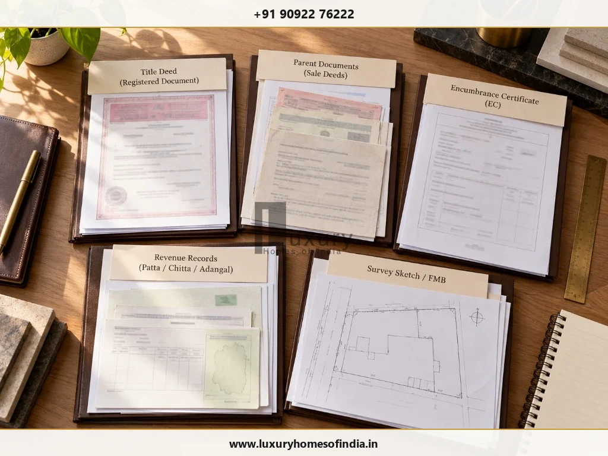

Buying a plot in Chennai for a custom-built or luxury home requires more than checking the seller's sale deed or confirming that a patta is available. To verify land title, examine the ownership history, compare registered transactions with revenue and survey records, confirm the seller's authority, investigate potential claims, and check the property's planning status separately. Tamil Nadu's official registration and land-record portals provide useful starting points, but online searches alone cannot establish that every legal issue has been resolved. An independent property lawyer should assess the documents and determine whether further investigation is necessary. Where survey numbers, extents or boundaries do not match, an appropriate survey professional may also be needed. Complete these checks before making an irreversible financial commitment. For a plot intended for a luxury home, this process helps identify ownership, access, boundary and development issues before design and construction decisions depend on the land.
1. Why land title verification matters before buying a plot
A plot can look suitable for construction and still present unresolved ownership, inheritance, mortgage, boundary or access issues. A site visit, property brochure or single online record cannot answer every question.
A structured title review helps you investigate:
- Whether the seller has the legal right to transfer the property.
- Whether the ownership history is supported by relevant documents.
- Whether recorded transactions, mortgages or other interests need investigation.
- Whether the survey number, subdivision, extent and boundaries match the actual plot.
- Whether inheritance, litigation, easements or restrictions may affect the transaction.
- Whether the land's planning status is compatible with your intended development.
For a future custom home, resolve material discrepancies before relying on the plot for architectural planning.
2. Step 1: Collect the relevant property documents
Ask for legible copies of the documents relating to the seller's ownership and the property's history. The exact list will depend on how the land was acquired, transferred or subdivided.

| Document or Record | What to Examine |
|---|---|
| Current sale deed / title instrument | Seller's claimed ownership and property description |
| Previous title deeds & parent documents | Historical transfers and unbroken continuity of title |
| Encumbrance Certificate (EC) | Registered transactions appearing within search scope |
| Patta and revenue records | Recorded names, survey details, sub-division and classification |
| FMB, TSLR or survey records | Recorded measurements, boundaries and parcel identification |
| Partition, release, or settlement deeds | How rights were legally transferred or divided among family members |
| Mortgage discharge / release deed | Evidence that any historical bank loan/mortgage was fully cleared |
| Relevant court orders / legal decrees | Legal basis for any claimed dispute resolution or title change |
| Layout approval & planning records | Whether the plot aligns with CMDA/DTCP approved layout plans |
Do not assume every document applies to every property. Ask your lawyer to identify missing links and determine which additional records are necessary.
3. Step 2: Trace the chain of title
The chain of title is the sequence of documents through which ownership has passed to the current seller over 30 to 40 years.
For example, a property may have passed through a purchase, a family partition and a later sale. The legal effect of each transaction depends on the documents, the parties' rights and the applicable law.
Check four key aspects:
- Names and authority: Did the person transferring the property have the relevant rights and capacity?
- Property identity: Do the survey numbers, subdivisions, extent and boundaries agree across all historical documents?
- Transfer history: Are material sales, partitions, releases, settlements or other transfers properly supported by registered deeds?
- Missing links: Does any gap require certified copies, older revenue records or further legal investigation?
There is no single search period that should automatically be treated as sufficient for every property. Ask the lawyer to determine the appropriate scope after reviewing the title history, applicable law and identified risks.
4. Step 3: Check the Encumbrance Certificate (EC)
An Encumbrance Certificate helps identify registered transactions appearing in the relevant registration records for a specified property and search period.
Official Tamil Nadu Registration Portal
Start by applying for an Encumbrance Certificate (EC) through the official TNREGINET portal. Verify search criteria, sub-registrar office jurisdiction, and survey numbers.
Does a nil EC prove clear title?
No. A nil EC is not conclusive proof that a property is free from every claim or defect. The result depends on the property details, records available and search period. It does not independently establish the entire chain of title, prove physical boundaries or confirm planning approval.
5. Step 4: Verify Patta and land records
Official Tamil Nadu Land Records & 2026 Portal Updates
Access revenue records via the Tamil Nadu e-Services Portal for Patta/Chitta, A-Register extracts, and FMB sketches.
Check the new Integrated Land Record and Patta Transfer History service launched in March 2026 covering online patta transfers from 2016 onward.
Compare the recorded name, survey number, subdivision, extent and relevant classification against the title deeds. Patta is an important revenue record indicating who pays land tax, but it is not conclusive proof of legal title under Indian law. If the seller's name does not match the deed, have your lawyer investigate the mutation records.
6. Step 5: Confirm the plot's physical identity and boundaries
The documents must relate to the land actually being sold. Compare the survey and subdivision numbers, recorded extent, boundaries, layout plot number and relevant survey records (FMB / TSLR) with the physical site.
If the records or on-site boundaries disagree, obtain an appropriate survey assessment from a licensed surveyor using a Total Station. Pay particular attention to legal access rights—a visible dirt path on site does not establish legal road access unless documented in approved plans.
7. Step 6: Investigate mortgages, litigation and third-party rights
Ask your lawyer to verify:
- Current or historical bank mortgages.
- Formal bank release deeds (NOC / Discharge Deed).
- Family partition, minor rights, or inheritance disputes.
- Litigation, court attachments, or land acquisition notifications.
- Easement rights or public waterbody/OSR reservations.
If a bank mortgage appears in historical ECs, demand and verify the registered Release Deed rather than relying on verbal assurances.
8. Step 7: Verify planning approval separately
Legal title and development permission answer different questions. A property may have a plausible ownership history while presenting planning constraints.
CMDA Approval Records & TNCDBR-2019 Rules
Verify layout approvals on the official CMDA planning approval portal.
Note that under the Tamil Nadu Combined Development and Building Rules, 2019 (TNCDBR-2019), planning permission does not establish ownership or legal title.
9. Step 8: Confirm the seller's authority to sell
Verify the seller's identity and compare it with the title documents. Jointly owned, inherited or entity-held property may require additional checks.
Where a property is sold through a representative, have the lawyer verify the General Power of Attorney (GPA), its registration status, lifetime validity, and specific authorization clauses. Possession of a GPA does not automatically establish ownership or authority to complete every type of transfer.
10. Step 9: Obtain an independent written title opinion
Engage an independent property lawyer to examine the title history and material risks. The written opinion should identify:
- Documents reviewed and records still required.
- The seller's claimed chain of title and any gaps.
- Relevant EC findings and search scope (30–40 years).
- Differences among deeds, revenue records, survey information and physical site.
- Mortgages, litigation, competing claims or restrictions requiring attention.
- Clear recommendation on whether to proceed, proceed with conditions, or pause.
11. Step 10: Resolve material issues before committing funds
Before paying a substantial advance or proceeding to registration, confirm that all title checks, seller authority checks, and planning checks are completed to your lawyer's satisfaction.
Have the Sale Agreement reviewed before signing. Do not rely on verbal promises that missing release deeds or Patta transfers will be supplied after registration.
Buying a Luxury Plot in Chennai for Your Dream Home?
Combine legal due diligence, site feasibility checks, and architectural planning under one seamless engineering team. Consult with Luxury Homes of India today.
Book a Technical & Legal Assessment12. Land title verification checklist & common mistakes
Homebuyer Verification Checklist
- Obtain current title deed and 30+ years of parent documents.
- Trace material transfers in the ownership history.
- Obtain and review an EC covering 30–40 years via TNREGINET.
- Compare Patta/Chitta and revenue records on e-Services.
- Confirm survey numbers, subdivisions, extent, and FMB boundaries.
- Investigate bank mortgages, court litigation, and release deeds.
- Verify seller authority, GPA validity, and co-owner consents.
- Check layout approval with CMDA / DTCP independently.
- Obtain an independent written legal opinion from a property lawyer.
Common Mistakes to Avoid
- Treating Patta as conclusive proof of title: Patta is a revenue tax record, not a title deed.
- Checking a limited EC window: Always run EC searches for at least 30–40 years.
- Assuming registration equals clear title: Registration records transactions; it does not cure invalid legal title.
- Confusing planning approval with ownership: CMDA approvals do not validate ownership rights.
- Paying advance before legal verification: Complete due diligence before making non-refundable payments.
13. Frequently asked questions
Final thoughts
Verifying land title in Chennai means connecting the ownership history with registration records, revenue records, survey particulars, the physical plot and applicable planning requirements.
An EC or patta check is a useful starting point, not the final decision. For a high-value plot intended for a custom-built or luxury home, complete independent legal due diligence before committing to the purchase.
Make sure the documents establish a coherent ownership history, the land is accurately identified, and every material discrepancy has been addressed.
Disclaimer: This article provides general homeowner information, not legal advice. Verify the title, current rules, and land status with qualified legal professionals before buying.